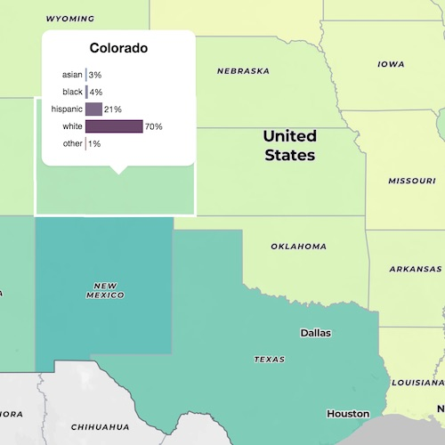

Welcome, I'm Maeva.
I am a PhD candidate in Alfred Spormann's lab at Stanford University. My research focuses on the metabolism of slow-growing microorganisms, in order to better understand how deep-subsurface microorganisms can live for hundreds to thousands of years.
When I am not running experiments in the lab, analyzing genomic data or writing scientific papers, I am exploring, analyzing or visualizing old and new datasets. Have a look at some of my projects below.
Before joining the Spormann lab, I graduated from the Ecole Centrale Paris, one of the top French Engineering School, in 2012, and obtained a M.S. in Environmental Engineering from Stanford University in 2013.
Selected Publications
- Fincker M, Spormann AM et.al, 2019, Metabolic reconstruction of globally distributed marine subsurface Chloroflexi genomes, in preparation.
- Fincker M, Spormann AM et.al, 2019, Metabolic stability of Dehalococcoides mccartyi under long term starvation, in preparation.
- Fincker M, Spormann AM. 2017. Biochemistry of catabolic reductive dehalogenation. Annu. Rev. Biochem. 86(1):357–86.
- Mayer-Blackwell K, Fincker M, et.al. 2016. 1,2-Dichloroethane exposure alters the population structure, metabolism, and kinetics of a trichloroethene-dechlorinating Dehalococcoides mccartyi consortium. Environ. Sci. Technol. 50(22):12187–96
See more on my Google Scholar profile.
Projects
Step-by-step tutorial to build an interactive map
Follow this tutorial to build your own interactive map with MapBox GL.